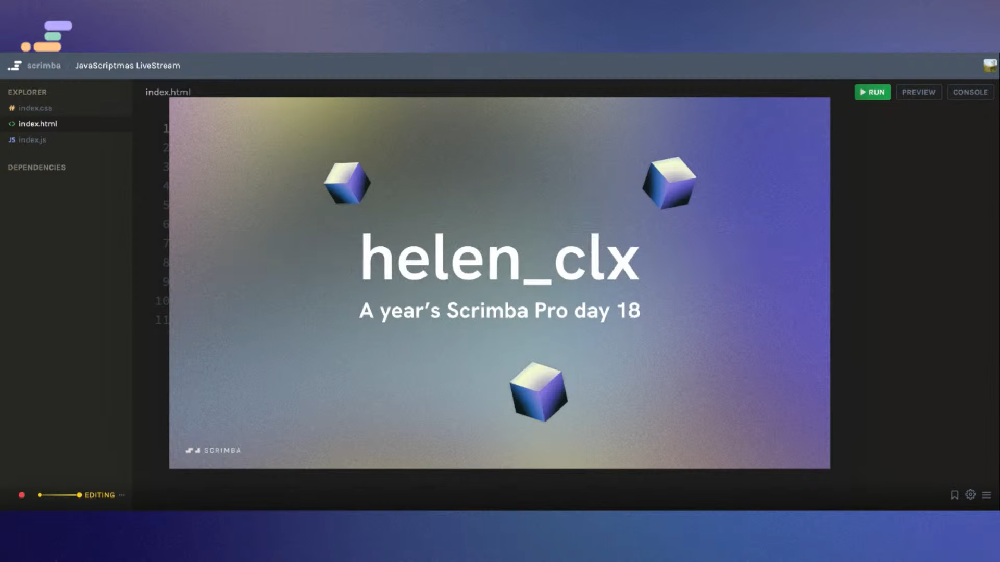

Starting from 1 December 2023, I had participated in Scrimba's JavaScriptmas challenge. After 24 days, I finally completed the entire challenge! I have compiled a scrim playlist for all my JavaScriptmas solutions on Scrimba.
In addition, when Scrimba announced the winners of JavaScriptmas in their JavaScriptmas PrizeFest livestream on 24 December, it was revealed that I (under my Twitter handle helen_clx) was one of the 24 winners of a one-year Scrimba Pro plan for my solution to the Day 18 challenge: AI alt text generator!
JavaScriptmas has been a great opportunity to practice and sharpen my CSS and JavaScript knowledge and skills. The AI challenges, including Day 18, which I won, were also the first time I learned to incorporate AI in coding projects. Therefore, it was a great surprise that I managed to win for an AI challenge.
Thank you Scrimba for the Christmas gift! With a one-year Scrimba Pro plan, I will be able to take Scirmba courses that are only available to subscribers.